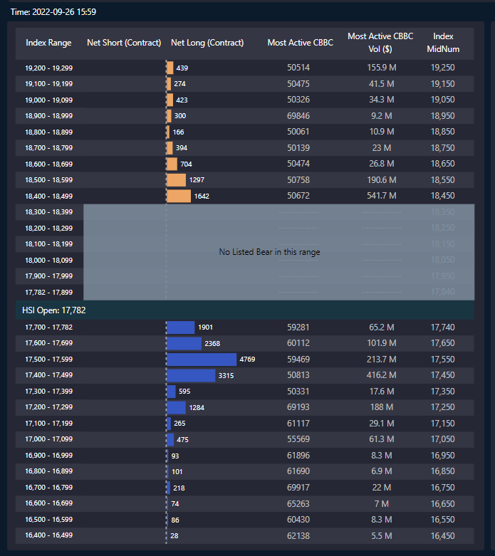

相信有留意9月6日Patreon文章的朋友都能賺一筆，即使沒有沽港期，也至少能避過一刧吧。這一跌浪完全展示了量化策略量化訊是何等美麗及完美，若你在7年前已開始留意我的文章，就會明白我在股市的操作手法：找因子，找數據，先驗證，後實戰。
先旨聲名，我寫文章並不在於證明自己有多準，而是想大家多認識金融市場，認識世界運作，以為欣賞量化交易的美。因為進行買賣決策的，不是我，而是因子、數據，我的角色只是在找有效的因子出來。說白一點，就是找出影響市場的東西。（新讀者可以多看舊Patreon文章，例如早幾個月寫的篇章，有詳細解釋因子的概念。）
奈何身邊仍有大量股民不肯認清真相，仍然以為炒股是看新聞、聽消息、拉線畫圖，然後一做就三、五、十年，賺錢不要緊，重點在於，年年虧，但仍繼續年年依樣葫蘆地看新聞、聽消息、拉線畫圖，極可悲。
例如這個月的跌浪，明顯是因為牛證太多，但身邊朋友仍在指是甚麼疫情嚴重、經濟差、通漲嚴重等因素令恒指下跌。這些通通都是狗屁，如果你不相信，那你繼續看新聞炒股好了，跟新聞炒個一兩年，看看帳戶回報，到時再來學習量化也未遲。
對上一次update是9月6日，這次就來繼續show幾張牛熊圖給大家欣賞。
9月9日：
9月19日：
9月20日：
9月22日：
9月26日：

9月27日：
天天都有大量資金湧入牛證，大市當然要向下殺吧，非常簡單，應該3歲小朋友也看得懂。
牛熊證這個因子我由2016年開始寫page就已經分享了，絕不是近來看到股市下跌才找東西「馬後炮」驗證，對於confirmation bias我是很敏感的，不斷提自己不要犯下這個致命錯誤（有機會下幾篇文章詳講）。
以上一共6幅牛熊圖，若配合恒指圖一起顯示，如下：
你會發現每次極多散戶買牛時，大市過兩天便下殺。
老實說，如果我無心做投資者教育的話，我絕不應分享這個有效指標，因為市場是零和遊戲，教懂你，我就賺少了錢，這是肯定的；同行朋友也瘋狂叫我不要分享，anyway，我真心想做投資者教育。
若你有朋友仍天天沉迷拉畫圖炒牛熊，有空就與他聊聊吧；如果不是很熟，就算了，他們只會覺得你阻住佢發達。
市場就是如此殘酷，認知錯誤的，不了解市場是如何運作的，就要被懲罰；認知正確的，了解市場的，就能得到獎勵。
因此，有朋友inbox表示因為看了Patreon而賺錢，我很樂見，樂見你找到alpha，為你擁有正確認知而高興。
就如著名期權操盤手歐陽一心曾說過，「炒賣是cash out你對世界的認知」，現實生活中對錯沒有明顯的獎罰機制，白卡佬也能生存，不會有問題，不過金融市場獎罰機制鮮明，且快，你稍為犯下認知錯誤，就會輸錢。這亦是我熱愛炒賣的一大原因。
祝大家Happy trading。